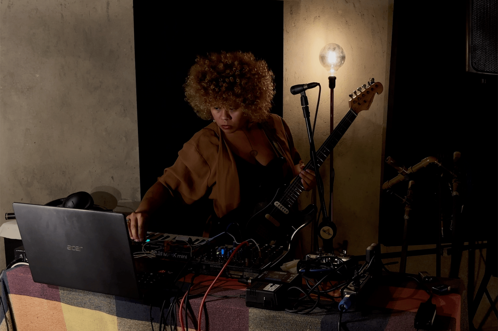
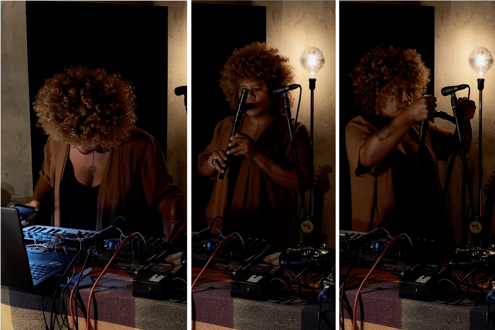
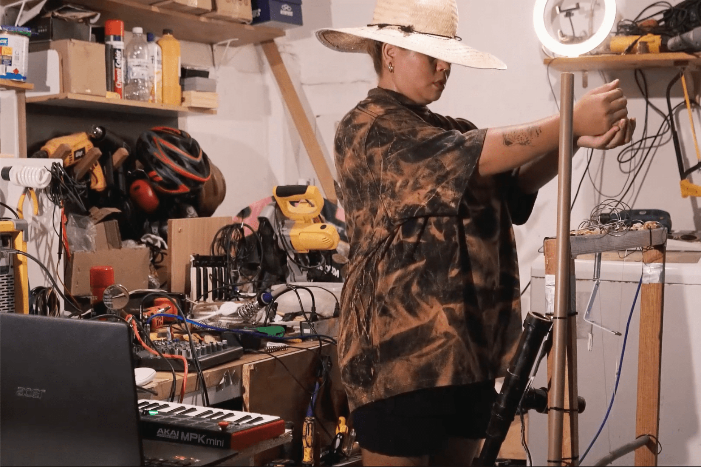
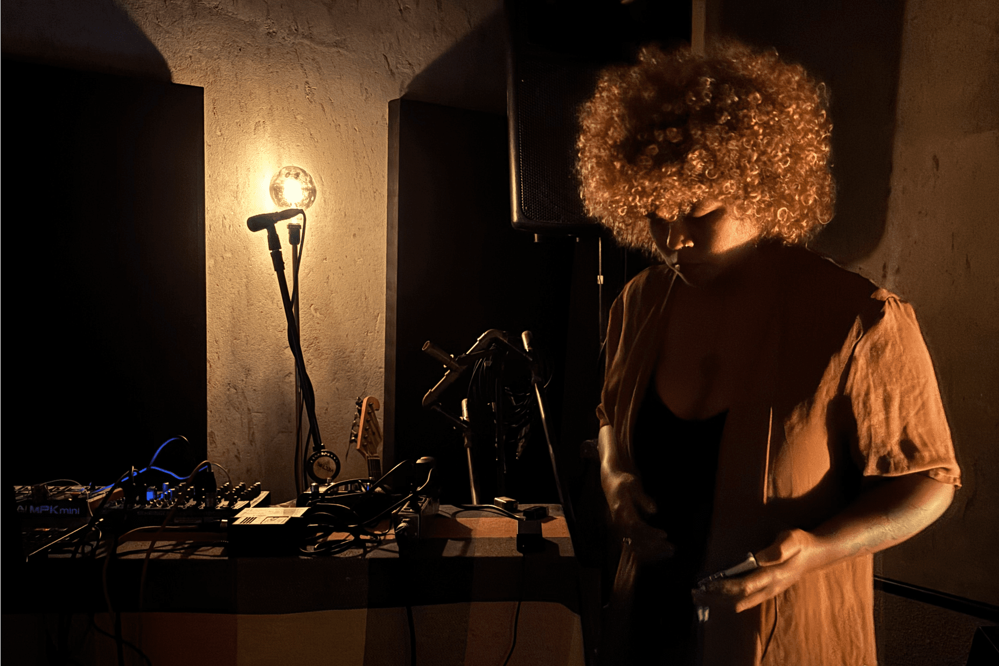

SONA apresenta KAYA
ENTRE BRINCAR E ESCUTAR, OUTRAS FORMAS DE VIVER

Desde criança, Roberta Kaya sabia que música não era apenas técnica, mas também uma forma de estar no mundo. Uma de suas primeiras memórias é a de subir num pé de pitomba para cantar. O gesto revela muito da sua escuta, enraizada no ambiente, no corpo, nas sensações. Quando a árvore foi cortada, o sol entrou com força no lugar onde antes havia sombra. Essa perda ressoou como uma fratura na paisagem, e acabou moldando também a forma como ela se relaciona com o som: como algo vivo, mutável, passível de fim.
Esse modo íntimo e passageiro de escutar o mundo atravessa toda a prática artística de Kaya. Sua música parece construir narrativas que criam presenças e escancaram ausências. Seus instrumentos, muitas vezes construídos por ela mesma, carregam uma precariedade proposital, como se cada som fosse uma tentativa de capturar algo em vias de desaparecer. Os loops de piano, que por vezes sustentam suas performances, funcionam como um chão provisório: oferecem estrutura, mas logo são interrompidos, desestabilizados pela entrada de novos timbres e ruídos, testados ali mesmo, diante do público. Em vez de separar planejamento e ação, Kaya parece fundir os dois em um processo intuitivo, onde o erro é aprendizado, e o som pode surgir do acidente acolhido.
Na música de Kaya, a tecnologia é ferramenta, mas também protagonista. Seus instrumentos, pedais feitos à mão, tubos de PVC soprados como flautas, sintetizadores caseiros, são construídos com soluções improvisadas. A feitura desses dispositivos está diretamente ligada à forma como são apresentados: cada um entra em cena como um personagem, revelado ao público com cuidado, em um gesto de partilha.
Esse modo de introduzir os elementos sonoros em posição de destaque, quase como personagens, remete às performances de artistas multidisciplinares como Concepción Huerta e Jiyoung Wi. No álbum colaborativo recém-lançado em cassete pela gravadora Aurora Central, a artista mexicana e a sul-coreana criam paisagens sonoras densas a partir da sobreposição de gravações de campo, sintetizadores analógicos e instrumentos manipulados ao vivo, como um violino distorcido e fragmentado. A performance enfatiza uma relação tátil com os dispositivos, em que fios aparentes, remendos visíveis, falhas e ruídos não são escondidos, mas integrados à linguagem da obra.
Outro exemplo significativo dentro dessa estética de fronteira entre som, espaço e objeto é o coletivo brasileiro Chelpa Ferro (1995-). Formado por artistas visuais, o grupo cria instalações e performances que fundem ruído, música e escultura sonora, colocando o som como elemento estrutural de uma experiência sensorial ampliada. A presença física dos objetos, os cabos expostos, a justaposição de ruídos e imagens, assim como a relação performática com o espaço, reforçam a ideia de que a música pode ser tanto uma experiência tátil quanto auditiva. Essa poética do som que transita entre a desordem organizada e o controle parcial encontra eco no trabalho de Kaya, que também valoriza a materialidade e a imperfeição em seus instrumentos e performances.
Um exemplo marcante é o vídeo Performance Sonora (pretasonora) (2025), disponível em seu canal no YouTube. Nele, Kaya atua sobre uma espécie de escultura sonora: uma estrutura composta por metal, madeira e canos de PVC, equipada com microfones de contato (piezo) que captam as vibrações diretamente dos materiais. Esses sons são processados ao vivo com efeitos como reverb, delay e distorções, criando texturas sonoras densas e imprevisíveis. A estrutura traz fios, arames enrolados, parafusos e molas penduradas, compondo um objeto híbrido entre instrumento e instalação.
Kaya a explora com os dedos, mas também com ferramentas como chaves de fenda e uma lima. Em um momento do vídeo, ela espalha pedras sobre a superfície metálica e as manipula lentamente, extraindo novos ruídos da fricção e do contato. Ali, o objetivo não é construir melodias ou harmonias convencionais, mas explorar as propriedades acústicas dos objetos, como vibram, ressoam, respondem ao toque, em uma abordagem que desloca a música para o território da investigação sensorial e espacial. Há ainda o uso de um instrumento de sopro construído com cano PVC, cujo som é digitalmente transformado.
Esse instrumento de sopro, inclusive, reaparece nas faixas que Kaya gravou com exclusividade para a SONA. O uso de instrumentos caseiros dá uma sensação de continuidade entre seus trabalhos de arte sonora e de música. Não se trata apenas de reutilizar materiais ou timbres, mas de insistir em uma mesma lógica poética independentemente do caminho a ser percorrido, a de explorar os sons a partir da fisicalidade dos objetos e do improviso.
Em Synthindo, as ideias musicais se encadeiam de forma contínua, como se brotassem organicamente umas das outras. Guitarra, tubos de PVC, controladora MIDI e loops se entrelaçam na construção de uma dramaturgia sonora: uma narrativa não verbal em que os gestos sonoros se desdobram em pequenas cenas, como num teatro abstrato. Cada som é tratado como corpo, cada instrumento como uma voz singular.
Já em Plastycidade, Kaya explora seu instrumento de sopro caseiro, feito com duas aberturas que ela cobre ou revela com as mãos para controlar a intensidade e a vibração do som. Através do uso criativo de delay, ela sobrepõe diferentes frases tocadas no instrumento, criando uma densidade que transforma o sopro em um “drone orgânico”, como ela diz, quase humano. Essa imagem reforça a maneira como o artesanal e o tecnológico se entrelaçam em sua prática.
Sua relação com a eletrônica, por exemplo, se apoia na escuta atenta das possibilidades e limitações dos próprios dispositivos. Ao trabalhar com instrumentos caseiros, o som não é moldado para soar limpo, controlado ou previsível. É justamente nos limites físicos dos materiais que Kaya encontra novas possibilidades estéticas.
Essa abordagem aproxima sua música de princípios da glitch art, linguagem visual e sonora que se apropria de falhas técnicas, bugs e interferências como recursos criativos. Em vez de corrigir o que sai do lugar, Kaya enfatiza as quebras e descontroles. Há um certo prazer em desestabilizar. Assim como na glitch art, que interrompe a fluidez da imagem digital para revelar suas entranhas, a música de Kaya impõe momentos de falha, suspensão e ruído que colocam o ouvinte em estado de alerta.
Em Synthindo, por exemplo, é possível notar como bases e texturas que pareciam dar sustentação ao fluxo sonoro são abruptamente retiradas, deixando no lugar um vazio momentâneo, quase como se o chão sumisse. A artista afirma que “gosta assim”, que sua música provoque um senso de desorientação, um tipo de estranhamento que mantém o ouvinte em aberto, imaginando o que mais poderia surgir ou o que poderia ter sido. Essa recusa em entregar uma estrutura confortável é, também, uma maneira de afirmar uma escuta ativa e crítica, que abrace a incerteza como valor criativo.
Para Kaya, essa incerteza atravessa suas decisões como artista. Como multi-instrumentista, define-se como alguém que “sabe um pouco de tudo, mas não domina nada”, uma afirmação que, longe de denotar insegurança, revela um posicionamento estético claro. É nesse espaço de tentativa, por vezes instável, por vezes surpreendente, que sua criação ganha forma e intensidade.
Essa abertura ao desconhecido tem raízes numa sensibilidade que Kaya frequentemente associa à infância. Ela afirma sentir sua infância ainda muito próxima, não como nostalgia, mas como presença viva. Para Kaya, brincar é uma forma legítima, e poderosa, de pesquisa sonora. Ao colocar o jogo no centro do processo criativo, ela questiona a ideia de que a arte precisa ser grandiosa para ser relevante. Ela reforça que sua meta não é se tornar “uma grande estrela” ou “uma artista imortal”, mas sim cultivar o bem-viver, tanto individual quanto coletivo, aqui e agora.
Nesse contexto, mais do que fuga ou distração, brincar é uma postura que recusa a lógica produtivista e competitiva que frequentemente rege o fazer artístico. No trabalho de Kaya, essa dimensão lúdica não significa falta de rigor, mas expõe uma ética que encontra no som caminhos para imaginar outras formas de viver e se relacionar com o mundo.